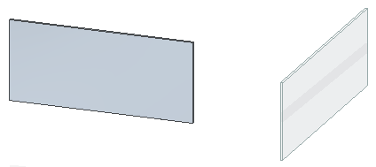
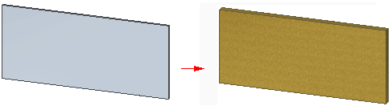
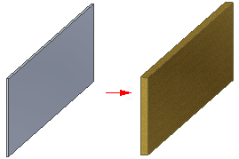
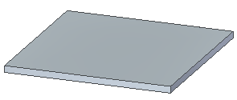
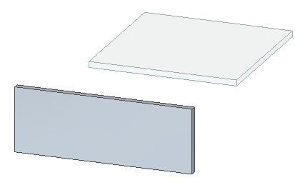

Sheet metal design bodies
Sheet metal files support both part and sheet metal design bodies. All synchronous bodies are held together by geometric relationships and are considered to be one body in any synchronous editing of the file. Edits made to the active design body also appear in the other design bodies in the file.
Adding sheet metal attributes
You can add sheet metal attributes to a file by:
-
Switching to the sheet metal environment
-
Adding a new sheet metal body
Once the sheet metal attributes are added to the file, they are maintained, even if no sheet metal bodies exist in the file. When you add a sheet metal body to a file, the sheet metal attribute variables are added to the variable table. If the file previously contained sheet metal bodies, those sheet metal variables are kept within the variable table.
All sheet metal design bodies residing in the same file have the same set of attributes:
-
Material Thickness
-
Bend Radius
-
Neutral Factor
-
Bend Relief Parameter
If you add a sheet metal design body to a part file, the Gage tab appears on the Material dialog box. All sheet metal design bodies share the same gage and bend properties within the same file. When you select the Apply to Model button on the Material dialog box, all sheet metal bodies in the file recompute to accept the new sheet metal parameters.
For example, the following file contains two design bodies.

If you change the material type and material thickness in the active body,

these attributes change for the other design body in the file.

Transforming sheet metal bodies
You can import elements into Solid Edge and then convert them on a body by body basis with the following commands:
-
Transform to Synchronous Sheet Metal
-
Transform to Sheet Metal (ordered environment)
When you use the Transform to Synchronous Sheet Metal command, the first transformed body in the file sets the default parameters of the material table. For example, create a rectangular protrusion that is 3 mm thick in a synchronous part.

When you transform the solid body to synchronous sheet metal, it becomes a tab with a material thickness of 3 mm. Any subsequent synchronous transformations of sheet metal bodies use the material setting of 3 mm that was defined by the previous bodies.

The Transform to Sheet Metal command converts the entire active body, and the transformed feature is added to the last position in the history tree.
Moving to synchronous
You can use the Move to Synchronous command to move the features for multiple bodies at once. If features for more than one design body are in the selected list of the PathFinder, the move to synchronous operation maintains the body identity.
When you move multiple bodies to the synchronous environment, the resulting features are listed in a sequential order that represents the body as it is converted.
Flattening multi-body files
You can create flat patterns of a multi-body file that contains multiple sheet metal bodies. The file can contain only one flat pattern at a time. If you need to create more flat patterns, you can delete the existing flat pattern and then create another one. You can use the Multi-body Publish command to publish the individual design bodies to separate files.
Switching between part and sheet metal
You can create files that contain sheet metal bodies in either the Part or Sheet Metal environment. You can use the Switch to command to switch between the environments. Switching from Part to Sheet Metal does not create sheet metal attributes for the active body. If you want to attribute the active body, use the Transform to Synchronous Sheet Metal command.
If there are no design bodies in the part file when you switch to sheet metal, the base modeling feature determines the initial body type in the sheet metal file. If the base feature type is sheet metal, sheet metal attributes are added and the body becomes a sheet metal body. If the base modeling type is part, no sheet metal attributes are added and the body remains a part body.
If the part file contains a design body when you switch to sheet metal, the active body defines the body type in the sheet metal file.
Copying sheet metal bodies
When you copy a synchronous sheet metal body, the sheet metal attributes are removed from the body. The copied sheet metal body behaves like a part copy until the attributes are restored. Copy workflows that result in this attribute removal behavior include:
-
Manipulate a body or the face sets of a body with the Copy option selected
-
Press Ctrl + C on a body or face sets of a body
Even though the sheet metal attributes are removed during the copy, you can use the Transform to Synchronous Sheet Metal command to reestablish the plate-connector model for the body.
Editing a multi-bodies file
When editing sheet metal features, such as dimples or beads, on design bodies, the body containing the feature you are editing does not have to be active. You can edit any feature on any design body.
When you select a synchronous element on either an active or inactive design body, the steering wheel is displayed and you can move the steering wheel into position relative to any body.
You can edit common synchronous features on all bodies simultaneously. For example, if there are synchronous holes on multiple design bodies, the edit is applied to all of the holes. You can dynamically edit multiple ordered features from different design bodies simultaneously.
How do I
Add a bodyToggle a solid body type
Rename a design or construction body
Learn more
Multi-body modelingMulti-bodies in PathFinder
Multi-body cutouts
Look up more details
Add Body commandAdd Body dialog box
Activate Part Body command
Activate Assembly Body command
Toggle Design/Construction Body command
Show Body Features command
Show Body Name command
Show All Design Body command
Hide All Design Body command
Show All Ordered Body command
Hide All Ordered Body command